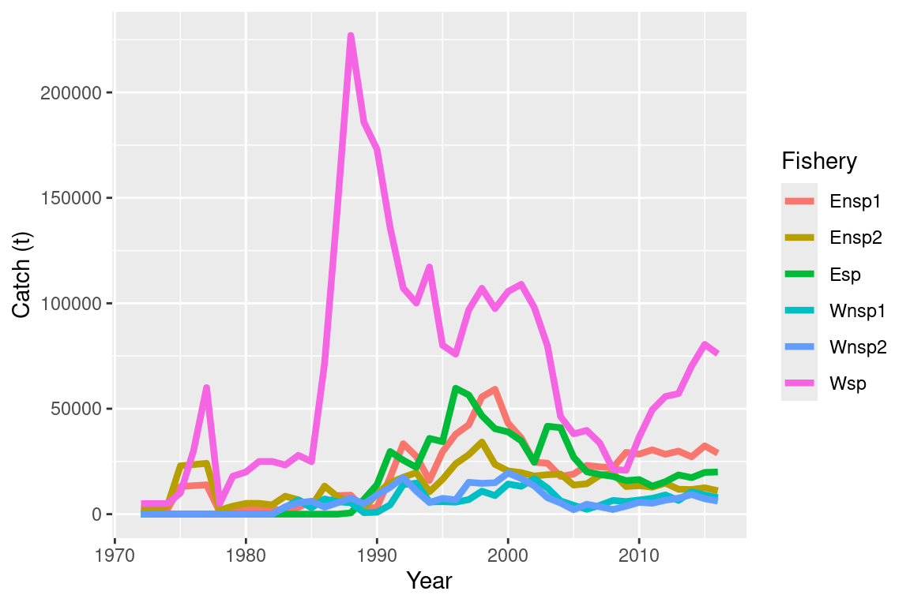
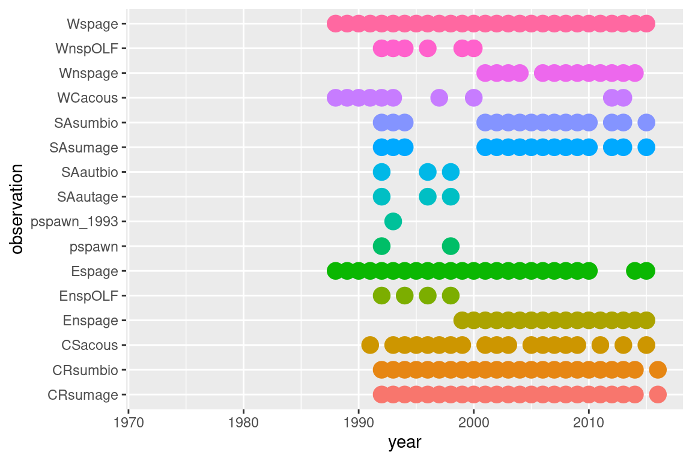

Chapter 3 Summarise configuration inputs
The r4Casal2 has some functions that summarise a set of input files and returns a summary of the key model attributes. It can be difficult to know all the working parts in a Casal2 model. This is compouned when users often make tweaks during an assessment and so the initial assumptions will not correspond to the final assumptions. The key function is summarise_config
3.1 Example files
config_dir = system.file("extdata", "TestModelComplex", package = "r4Casal2", mustWork = TRUE)
## This function is the key function will read a Casal config file and report useful information
## should be used when describing model structures and assumptions
## as well as validation.
summary = summarise_config(config_dir, config_file = "config.csl2", quiet = T)
names(summary)## [1] "category_df" "estimate_df" "full_category_df"
## [4] "method_df" "catch_df" "time_step_df"
## [7] "time_step_df_just_lab" "obs_year_df" "model_years"
## [10] "model_ages" "model_length_bins" "M_by_category"
## [13] "model_block"ggplot(summary$catch_df, aes(x = year, y = catch, col = fishery)) +
geom_line(size = 1.5) +
labs(x = "Year", y = "Catch (t)", col = "Fishery")
ggplot(summary$obs_year_df, aes(x = year, y = observation, col = observation, size = active)) +
geom_point() +
guides(colour = "none", size = "none")## Warning: Removed 509 rows containing missing values (geom_point).
kable(x = summary$time_step_df, caption = "Annual cycle")| Time-step | Processes (type) | age_size_W_male (assumed growth) | age_size_E_male (assumed growth) | age_size_W_female (assumed growth) | age_size_E_female (assumed growth) |
|---|---|---|---|---|---|
| Oct_Nov | Wrtn (transition_category), Ertn (transition_category), Instant_mortality (mortality_instantaneous) | 0.25 | 0.25 | 0.25 | 0.25 |
| Dec_Mar | recruit_W (recruitment_beverton_holt), recruit_E (recruitment_beverton_holt), Instant_mortality (mortality_instantaneous) | 0.6 | 0.6 | 0.6 | 0.6 |
| Apr_Jun | Whome (transition_category), Instant_mortality (mortality_instantaneous) | 0.9 | 0.9 | 0.9 | 0.9 |
| End_Jun | Wspmg (transition_category), Espmg (transition_category) | 0.9 | 0.9 | 0.9 | 0.9 |
| Jul_Sep | Ageing (ageing), Instant_mortality (mortality_instantaneous), SSB_E (derived-quantity 0.5), SSB_W (derived-quantity 0.5) | 0.0 | 0.0 | 0.0 | 0.0 |
kable(x = summary$full_category_df, caption = "Category information")| Category | AgeLength | LengthWeight | Distribution |
|---|---|---|---|
| male.west.sa | age_size_W_male (von_bertalanffy) | Length_weight (basic) | normal |
| male.east.cr | age_size_E_male (von_bertalanffy) | Length_weight (basic) | normal |
| male.west.cr | age_size_W_male (von_bertalanffy) | Length_weight (basic) | normal |
| male.west.wc | age_size_W_male (von_bertalanffy) | Length_weight (basic) | normal |
| male.east.cs | age_size_E_male (von_bertalanffy) | Length_weight (basic) | normal |
| female.west.sa | age_size_W_female (von_bertalanffy) | Length_weight (basic) | normal |
| female.east.cr | age_size_E_female (von_bertalanffy) | Length_weight (basic) | normal |
| female.west.cr | age_size_W_female (von_bertalanffy) | Length_weight (basic) | normal |
| female.west.wc | age_size_W_female (von_bertalanffy) | Length_weight (basic) | normal |
| female.east.cs | age_size_E_female (von_bertalanffy) | Length_weight (basic) | normal |
kable(x = summary$estimate_df, caption = "Estimate summary")| label | same | prior | lower_bound | upper_bound |
|---|---|---|---|---|
| CSacousq | - | lognormal | 0.01 | 4.53 |
| WCacousq | - | lognormal | 0.01 | 3.35 |
| CRsumq | - | lognormal | 0.016 | 0.51 |
| SAsumq | - | lognormal | 0.020 | 0.51 |
| SAautq | - | lognormal | 0.020 | 0.51 |
| CR_process_error | - | uniform | 0.0 | 1 |
| SA_process_error | - | uniform | 0.0 | 1 |
| B0_E_with_total_log_b0_prior | - | uniform | 12.6 | 16.2 |
| B0_W_with_proportion_prior | - | beta | 0.11 | 0.59 |
| YCS_E | - | lognormal | 0.06 0.06 0.06 0.06 0.06 0.06 0.06 0.06 0.06 0.06 0.06 0.06 0.06 0.06 0.06 0.06 0.06 0.06 0.06 0.06 0.06 0.06 0.06 0.06 0.06 0.06 0.06 0.06 0.06 0.06 0.06 0.06 0.06 0.06 0.06 0.06 0.06 0.06 0.06 0.06 | 8.60 8.60 8.60 8.60 8.60 8.60 8.60 8.60 8.60 8.60 8.60 8.60 8.60 8.60 8.60 8.60 8.60 8.60 8.60 8.60 8.60 8.60 8.60 8.60 8.60 8.60 8.60 8.60 8.60 8.60 8.60 8.60 8.60 8.60 8.60 8.60 8.60 8.60 8.60 8.60 |
| YCS_W | - | lognormal | 0.06 0.06 0.06 0.06 0.06 0.06 0.06 0.06 0.06 0.06 0.06 0.06 0.06 0.06 0.06 0.06 0.06 0.06 0.06 0.06 0.06 0.06 0.06 0.06 0.06 0.06 0.06 0.06 0.06 0.06 0.06 0.06 0.06 0.06 0.06 0.06 0.06 0.06 0.06 0.06 | 8.60 8.60 8.60 8.60 8.60 8.60 8.60 8.60 8.60 8.60 8.60 8.60 8.60 8.60 8.60 8.60 8.60 8.60 8.60 8.60 8.60 8.60 8.60 8.60 8.60 8.60 8.60 8.60 8.60 8.60 8.60 8.60 8.60 8.60 8.60 8.60 8.60 8.60 8.60 8.60 |
| M_male_x0 | - | uniform | 5.1 | 9.1 |
| M_male_y0 | - | uniform | 0.01 | 0.30 |
| M_male_y1 | - | uniform | 0.5 | 2.0 |
| M_male_y2 | - | uniform | 0.5 | 2.0 |
| M_female_x0 | - | uniform | 5.1 | 9.1 |
| M_female_y0 | - | uniform | 0.01 | 0.30 |
| M_female_y1 | - | uniform | 0.5 | 2.0 |
| M_female_y2 | - | uniform | 0.5 | 2.0 |
| sel_Whome | - | uniform | 0.01 0.01 0.01 0 0 0 0 1 | 1 1 1 1 1 1 1 1 |
| sel_Espmg_male | - | uniform | 0 0 0 0 0 0 0 0 | 1 1 1 1 1 1 1 1 |
| sel_Wspmg_male | - | uniform | 0 0 0 0 0 0 0 0 | 1 1 1 1 1 1 1 1 |
| sel_Espmg_female | - | uniform | 0 0 0 0 0 0 0 0.6 | 1 1 1 1 1 1 1 1 |
| sel_Wspmg_female | - | uniform | 0 0 0 0 0 0 0 0.6 | 1 1 1 1 1 1 1 1 |
| Enspsl_mu | - | uniform | 64 | 84 |
| Enspsl_s_l | - | uniform | 4 | 44 |
| Enspsl_s_r | - | uniform | 4 | 44 |
| Wnspsl_mu | - | uniform | 64 | 84 |
| Wnspsl_s_l | - | uniform | 4 | 44 |
| Wnspsl_s_r | - | uniform | 4 | 44 |
| Espsl_a50 | - | uniform | 6 | 80 |
| Espsl_ato95 | - | uniform | 4 | 60 |
| Wspsl_shift_param | - | normal_by_stdev | -10.24 | 2.24 |
| CRsl_mu | - | uniform | 64 | 84 |
| CRsl_s_l | - | uniform | 4 | 44 |
| CRsl_s_r | - | uniform | 4 | 44 |
| SAsl_mu | - | uniform | 64 | 84 |
| SAsl_s_l | - | uniform | 4 | 44 |
| SAsl_s_r | - | uniform | 4 | 44 |